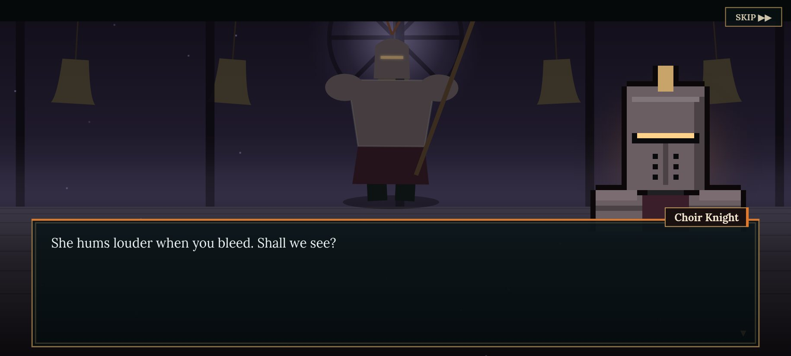
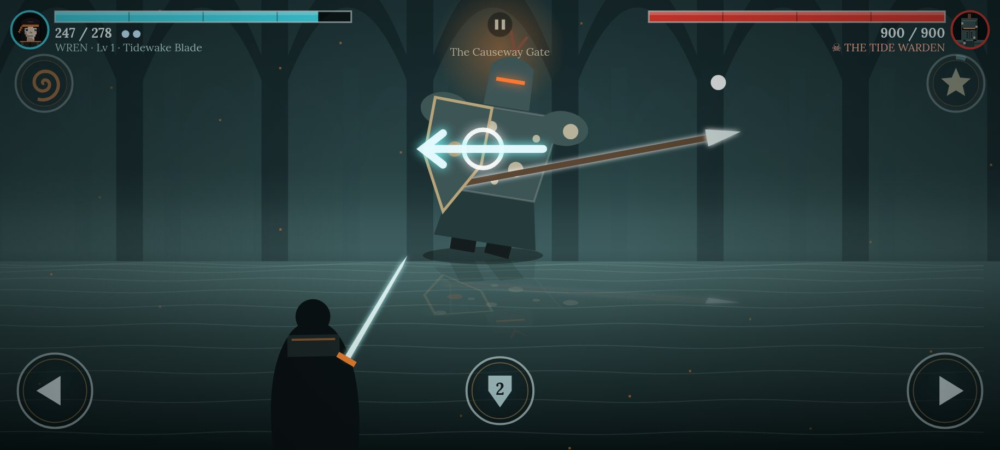
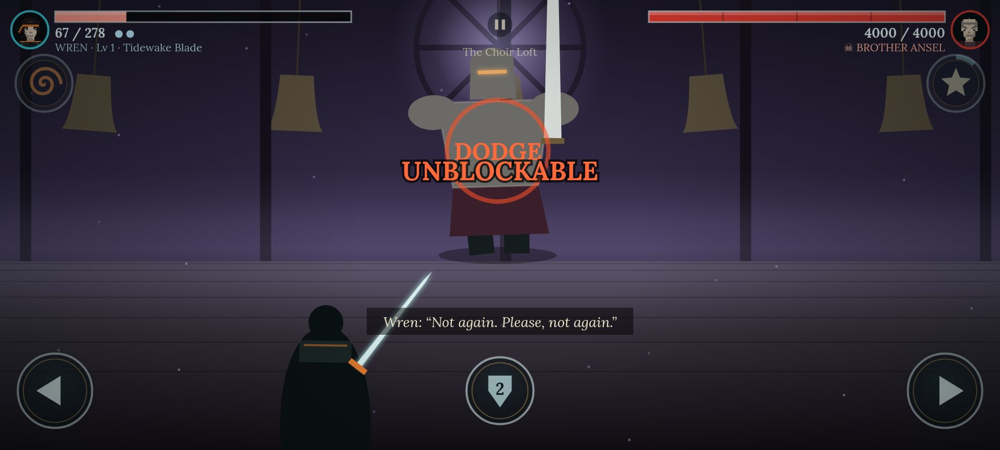
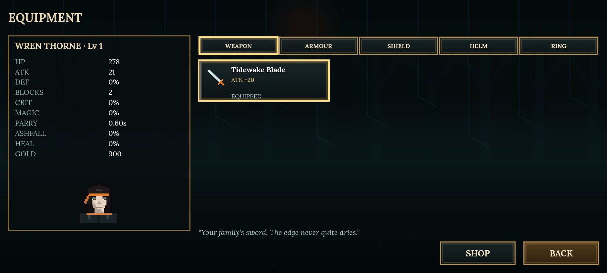
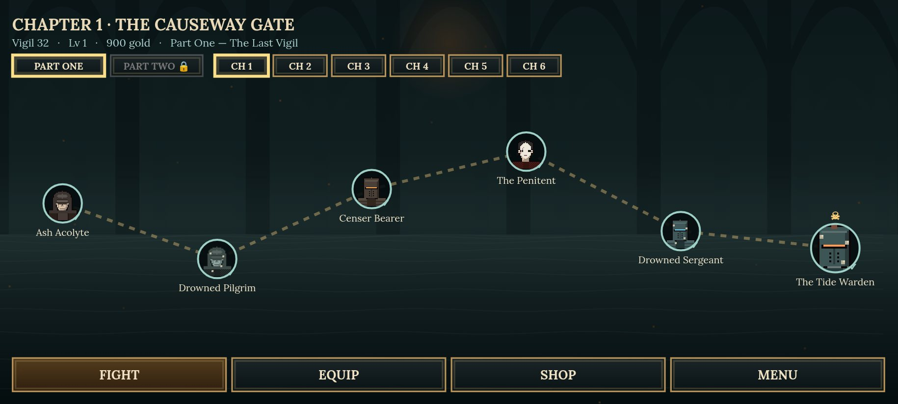
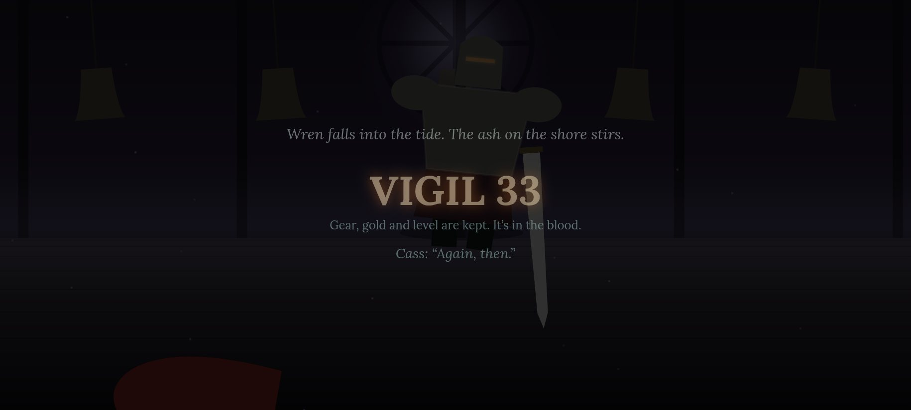
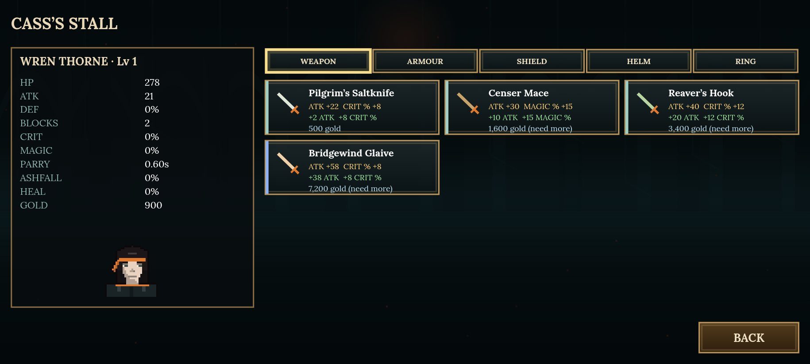
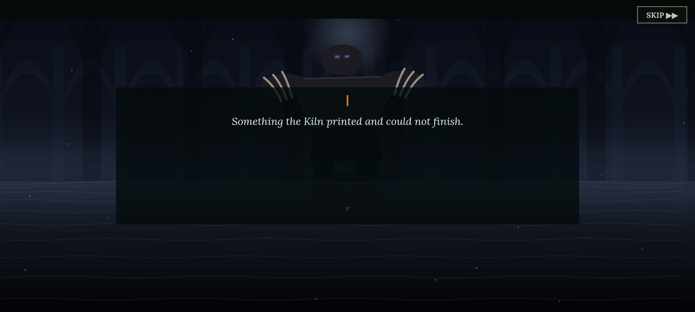

Directional parry
Every enemy telegraphs a swing with a glowing arrow. Swipe along it to parry. A timing ring shrinks onto the arrow and grades you Parry, Great or Perfect.
Die. Wake. Hold the vigil again.
Free · No install needed in the browser · Landscape works best · Android 7.0+ for the APK · v2.0.1
Vael is a grey coast of salt marsh and broken causeways. On a tidal island stands the Spire of Morrow, and on its throne sits Aurec, the Ember King, who has ruled for nine hundred years.
You are Wren, a knight of the Thorne line, and you do not stay dead. Every fall adds one to the Vigil counter. You wake at the drowned cathedral with your gear intact, and you walk the causeway again.
Part Two, The Quench, asks what the rebirths really are: a lullaby hidden in eight places, a Kiln that printed thirty-three of you, and a choice at the end that splits the story in two.

Every enemy telegraphs a swing with a glowing arrow. Swipe along it to parry. A timing ring shrinks onto the arrow and grades you Parry, Great or Perfect.
Death adds to the Vigil counter and sends you back to the cathedral with your gear. Losing is part of the story.
Weapons, armour, shields, helms and rings across 5 slots, with drops, a shop, rarity colours and stat-delta comparisons.
Pixel-art portraits for 45 characters, typewriter dialogue, chapter cards and branching choices before every duel.
Enemies feint, delay and throw unblockable strikes with a clear warning. You read them and dodge left or right.
Around 30 haptic patterns through a native bridge: a different buzz for a block, each parry tier, a counter and a low-HP heartbeat.







I am Kei, a solo developer in Singapore. This is the honest version of how this game came together: the walls I hit, the bugs that humbled me, and what I did about each one.
The problem. ASHBORN began as a 3D, Infinity Blade-style duel in Unity 6. The very first phone build looked fine for exactly one hit. Then the game slowed to about 2% speed and never came back. My hit-stop effect froze time on impact and was supposed to release it, but the timer releasing it ran on scaled time, which I had just set to almost zero. The game was waiting for a clock it had stopped.
How I solved it. I rewrote hit-stop to count down in real, unscaled time, and added a watchdog that forces time back to normal if anything ever holds it too long. Lesson one: every effect that pauses the world needs a guaranteed way out.
The problem. I wanted real lighting, so I ported the duel to Unreal Engine 5. Builds refused to start because Live Coding in an open editor locked the binaries. Then the C++ compiler threw C2487 and C2664 errors at me, a wrong export macro on a class member and a type mismatch in a function call, buried in engine headers I had never read.
How I solved it. I learnt to close the editor or disable Live Coding before every command-line build, and fixed the declarations one error at a time until the module compiled clean. Slow, but every fix taught me how the engine is actually put together.
The problem. The first Android APK was 219 MB. For a single-arena duel that is not a game, it is a download nobody finishes. Too big even to upload to my own drive for testing.
How I solved it. I switched to a Shipping configuration, stripped about 125 MB of debug symbols from the native library with llvm-strip, then re-aligned and re-signed the APK by hand. I disabled every engine plugin the game did not use and capped Android textures at 512 px. It came out under 95 MB.
The problem. The first phone test showed a frozen arena and an empty space where the boss should be. The health bars still moved when I swiped, which was the clue: the game was running, but nothing was visible or animated.
How I solved it. The boss material was missing the “used with skeletal mesh” flag, so mobile could not render it at all. And my hits were landing in code but were never wired to any animation. I fixed both, and the duel came alive.
The problem. Even working, the 3D build felt like a tech demo. To unwind, I rebuilt the same idea in 2D, in the browser, in a few days. My testers preferred it. That hurt a little, because 3D is where my ambition lives.
How I solved it. So I listened. I took the 2D version all the way: 12 chapters, 45 enemies, 74 pieces of gear and a rebirth story with two endings, in about 2 MB. 3D is not finished for me. But I now prove the fun small first, then scale it.
The problem. Testers said the characters felt static. I studied Shadow Fight 2 and wrote a procedural animation pass: breathing stances, weight shifts, wind-ups, lunges, recoil, blade trails and enemies that topple when they fall.
How I solved it. Then I dropped Capacitor for a lean WebView wrapper that my own build kit compiles without the Android SDK, and added native haptics through a JS bridge with around 30 patterns, a parry timing ring, three parry tiers, slow-motion on a perfect parry and counters.
Nobody mentioned polygon counts. People talked about the moment a parry lands right on time.
Keeping the whole game around 2 MB forced every system to earn its place.
The 2% soft-lock taught me to build watchdogs into anything that touches time.
Each APK on a real device taught me something no design doc could.
I want to keep making small, lightweight phone games that are genuinely fun: quick to download, easy to pick up and hard to put down. 3D is still on my horizon, but now I prove the fun small first, then scale it.